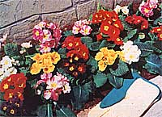

You may have heard that these little beauties can't be started from seed. Don't believe a word of it!
For many years, my neighbor kept a three-foot row of primroses growing at the end of her sun porch. Each spring, with all the certainty of the changing seasons themselves, those three rows would explode into a single mass of sunshine yellow blossoms with buttery orange eyes. And, each spring, I coveted.
I thought about attempting to grow my own primroses from scratch-until I did some research and was advised, over and over again, that the flowers are considered very difficult to start from seed. For one thing, many varieties require a period of postplanting freezing to break dormancy. What's more, I learned that primroses are slow and erratic germinators. In general, starting primroses from seed is not a project generally recommended for the novice flower gardener- which, at that time, I most certainly was.
Then one winter's day, while studying the seed catalogs in anticipation of spring planting, I spotted a listing for something called Pacific Giant primrose, which flowered in shades running from crisp white and creamy yellow through varying hues of blue to satiny pinks and reds. And this variety of primrose, the catalog claimed, was somewhat easier to start from seed than most. I ordered a packet.
When the mail carrier delivered my primrose seeds, I put them aside for the moment and turned my attention to planting my vegetable garden and trimming it with a border of the annuals I had found so reliable and easy to start in years past. But the day finally came when the "sure and easy" planting was done, and I had to face up to the task I'd set for myself.
THE GREAT PRIMROSE CHALLENGE
Having experienced, in previous years, the devastating seedling losses that various fungal diseases can cause, I began my planting preparations by carefully washing the tray I planned to use for sprouting the primroses; then I rinsed it with a mild chlorine solution.
The next step was to fill the tray with a 50/50 mix of sphagnum moss and vermiculite and then to place it in an inch of water in the kitchen sink. After a couple of hours, when the planting mix had absorbed most of the water, I removed it from the sink to drain while I prepared lunch.
After lunch, I retrieved my precious packet of potential primroses and carefully sprinkled the seed, in rows, in the tray of prepared soil. Since the seeds were tiny, I dusted them with a light covering of vermiculite . . . just enough to hide the seed from sight. Then I slipped the tray into a plastic bag, closed the end, and placed it in the freezer.
After two weeks, I removed the planting tray from the freezer, punched a few holes in the plastic bag for ventilation, and placed it in a north-facing window, where it would receive indirect light-but no direct, hot sunshine-and where I could conveniently watch for seedlings to appear.
At long last-nearly two weeks after I'd removed the container from the freezer-I saw the first fat little seedling leaves pushing up through the vermiculite. Excited at this longawaited development, I removed the plastic cover and moved the tray to a south-facing kitchen window, where there was plenty of sunlight. By the end of the week I was rewarded with a healthy stand of sprouts.
After a few more days I decided that the young plants needed more sunlight and fresh air than they were receiving in my kitchen window, so I moved them to the corner of an empty cold frame and rigged a piece of wire screen over the top to conserve moisture and shade the plants from the intense summer sun. As further proof against damage from Old Sol, I prepared a solution of water containing a trace of nonburning fertilizer and used this to keep the soil in the plants' tray damp at all times (but never soggy).
By the first of August the baby primroses had formed tiny rosettes of leaves and seemed ready for transplanting-so I moved them to a nursery bed at the edge of the garden and rigged a cheesecloth tent to shade them until they became accustomed to their new home.
As soon as the little primroses had taken hold (with new growth as evidence), I removed the cheesecloth. I continued to water the plants during dry spells and watched as new leaves pushed up from the centers and flattened out to form dainty little whorls.
Toward the end of September I decided to prepare permanent homes for my primroses. Having read that these delicate flowers prefer shade and moisture, I chose spots that I knew would be partially shaded during summer, then turned lots of compost and peat moss into the soil. With the beds ready, I did the final transplanting . . . and watched the plants flourish in their new homes.
Even when the fall rains came, my primroses kept growing, some forming flat-topped plants four inches across before freezing weather arrived. When the soil was finally frozen, I covered the plants with a few inches of straw held in place with a layer of evergreen boughs, and wished my primmies a cozy winter's sleep.
Early the following March, when the snow had melted and daytime temperatures began to rise above freezing, I removed the straw-a little at a time, and only on cloudy days-to gradually introduce the fresh, green, crinkly leaves to the sun.
Near the end of March the first bud opened to cast a lovely yellow-and from then through May the little spots of rose, gold, lilac, and red kept me entranced. In fact, the thrill of vibrant color so surpassed anything I had expected when I made out that order for primrose seed the year before that I vowed never again to be without my lovely harbingers of spring.
I want to encourage any fellow primrose fanciers out there to go ahead: Ignore those who say it can't be done, and make the small investment in money, time, and effort required to try growing primrose from seed.
There's very little to lose, and a great deal to gain-not the least of which is the satisfaction of proving those naysaying "experts" wrong!
EDITOR'S NOTE: Although there are many varieties of primroses, Pacific Giant appears to be the best bet for novice growers; it is both hardy and relatively easy to start from seed. Two sources for the seed are the Geo. W. Park Seed Company (P.0. Box 31, Greenwood, SC 29647) and Burpee Seed Company (300 Park Ave., Warminster, PA 18974). Both offer free catalogs.
|
 |
|
|